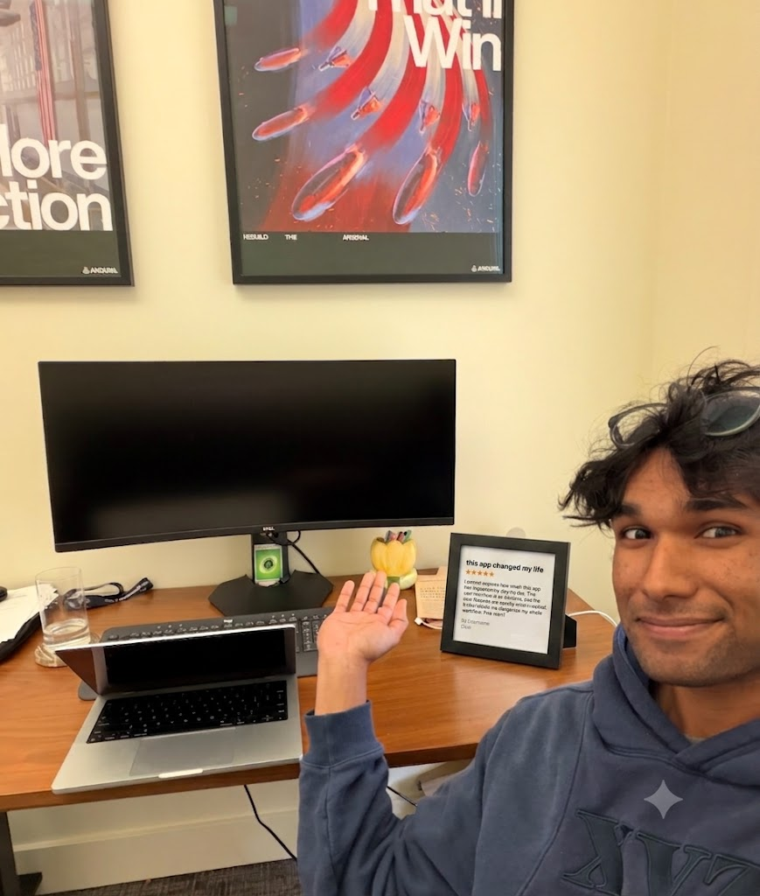

The New Limits Are No Limits
Ammar Kazi built America's No. 1 health app. Then his software found a company no investor had ever heard of.

Kinase crossed six million downloads last week and became the App Store's #1 health and fitness app. It has zero employees, and building it is not Ammar's job. He is an investor at XYZ Venture Capital, and Kinase is one of three things he did in the past two years.
Kinase is named for the enzyme that lowers a reaction's activation energy, and that is the whole product: it reads your calendar, finds the 40 free minutes you would have spent scrolling, books the workout, and removes every excuse before you can make it. Ammar wrote it across eleven weekends; AI agents wrote the code, handled App Store review, and answer its support tickets.
The app went viral in March for its accountability feature, which holds users' friends “hostage” with escalating, absurd messages. The screenshot that did it — “If you don't log your food today, I'm sending a picture of a foot to Jake” — pulled 44 million views in a week, and “I fear the foot” became group-chat shorthand for getting your life together.
“The scarce inputs are judgment and the willingness to get on the plane. Agents did everything except decide what mattered.”
The same pattern ran through his role at XYZ. In 2026 Ammar began to automate XYZ's internal paperwork — meeting notes, pass emails, the firm's deal tracking — and the investment team doubled its time in front of founders. He then pointed efforts outward and built a sourcing agent to read grid interconnection queues, county building permits, and import manifests every night.
Last October it flagged Kiln Energy, a five-person team in Gary, Indiana, with no website — just import manifests showing graphite blocks arriving by the shipload and a tariff filing showing them buying power at 2 a.m. Kiln stores cheap off-peak electricity as 1,500°C heat in graphite and sells it to steel and cement plants, a run at the 20% of global energy that is industrial heat, which no one has electrified. Ammar was on a flight the next morning.
XYZ led its $8m seed in November. Kiln's first units now run inside a Gary steel mill, with eleven Midwest plants on the order book.
“In 2026, each of those things needed a team — engineers, designers, analysts,” Kazi said. “Now the scarce inputs are judgment and the willingness to get on the plane. Agents did everything except decide what mattered.”
“No investor had ever heard of us — we melt graphite in a converted steel warehouse,” said Dr. Annie Sun, Kiln's founder. “Ammar found us from our shipping manifests before our own state's economic development office did. Then he showed up in person, in Gary!”
Ammar's two years read as a case study: nothing he used was proprietary. The agents behind Kinase, the automations at XYZ, and the sourcing tool that found Kiln run on the same publicly available models anyone can use. Ammar is one case study among thousands — judgment is now the unit of production.